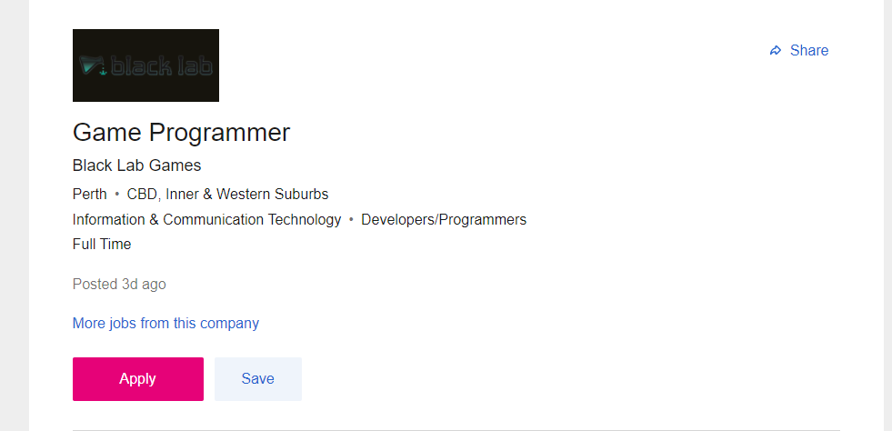

1. Position Description
The company is looking for a full-time programmer with unity3d experience, and the initial 12-month contract is likely to be extended or become a permanent role. This is a professional game software development programmer. This job is responsible for writing code and core modules of the program, looking for a more flexible and reliable system architecture. At the same time, it is required to use C series language for programming and have high-quality code level to fix the quality problems of the program. At the same time, candidates are required to have a high level of code and be familiar with C language programming.
2.A description of the skills, qualifications and experience required for the position.
This position requires candidates with more than years of development experience and a bachelor's degree in computer science or equivalent experience. This means that you have solid code skills and key competencies. It requires you to have good communication skills. You must help others solve problems. You must be able to find problems, which is the most difficult. At the same time, you can use c# experience, use Unity3D game engine to develop games or software, read and understand SDK documents, and convert these knowledge into runnable code and system. At the same time, he has experience in C + +, writing shader code or developing on non PC devices, and is enthusiastic about video game development.
3.A description of the skills, qualifications and experience you currently have.
At present, I don't have many years of programming experience. I only have three years. In addition, I have not participated in any large and medium-sized projects, and my code proficiency is far from enough. And I have only studied C language, and I don't know much about unity3d in game development. Most of my courses are devoted to Java development. At the same time, I don't know much about the use of SDK, but I have the ability to communicate and the love to video games development.
4.A plan describing how you will obtain the skills, qualifications and experience required for the position, building on those you have now. This need not be greatly detailed, (and will probably change significantly over time anyway), but try to be as specific as you can.
I don't have any experience in the IT industry, so I think what I need most is to improve my code level, learn all kinds of front and rear knowledge, and practice some it work, such as helping some small enterprises write some simple programs, taking advantage of extra time to learn some knowledge of game opening, and visiting and studying major game companies. Then continue to participate in medium-sized projects and large-scale projects and play a more important role. In the process of continuous learning, constantly improve their coding ability to improve their ability to meet the requirements of this post.